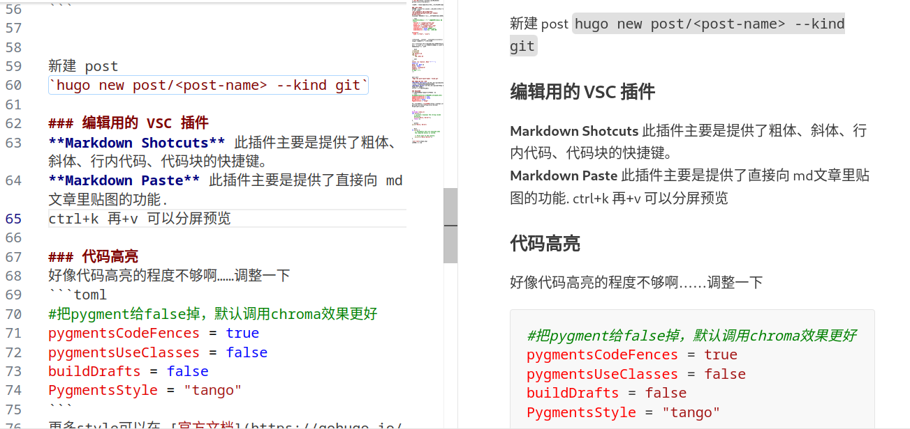
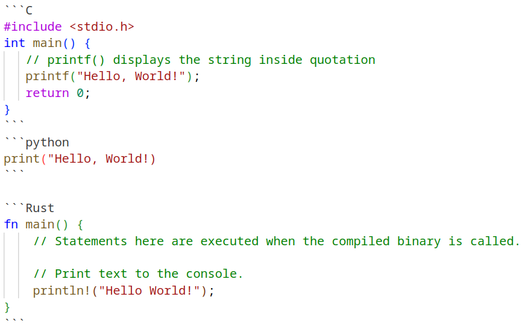

使用 git theme
找了很多 theme，最后决定直接使用GitHub版本了！
安装 theme
首先跟着官方教程把 ananke 主题安装好，然后再下载 git theme
git submodule add git@github.com:MeiK2333/github-style.git themes/github-style
官方给了配置文件，稍微进行更改就可以。注意这里
#userStatusEmoji = "😀" 不需要这个emoji 就注释掉
favicon = "/images/github.png"
avatar = "/images/ava_c.png"
headerIcon = "/images/ava_c.png"
location = "Shenzhen, China"
enableGitalk = false #首先注释掉
enableSearch = true #添加本地搜索
[outputs]
home = ["html", "json"]
在根目录（和 content 一个目录下）创建static/images 把你的头像放在这个下面
我在 arhcetype 下建立了模版，采用叶子包的方法，给每一个 post 单独建立文件夹，这样每个 post 的图片就不会混杂在一起啦
//目录结构
archetypes
├── default.md
└── git
└── index.md
---
title: "{{ replace .Name "-" " " | title }}"
date: {{ .Date }}
draft: false
author: "acyanbird"
summary: ""
# tags: [""]
---
新建 post
hugo new post/<post-name> --kind git
编辑用的 VSC 插件
Markdown Shotcuts 此插件主要是提供了粗体、斜体、行内代码、代码块的快捷键。
Markdown Paste 此插件主要是提供了直接向 md文章里贴图的功能.
ctrl+k 再+v 可以分屏预览
或者右键tab直接预览 ctrl+shift+v

托管到 GitHub Page
其实应该在 ananke 的时候尝试的……算了已经这样了，按照官方教程走一波！
简简单单初始化……然后上传 blog，注意主题最好按照 sub-module 的方式提交免得出现错误！其实有强制嵌套的办法，我之前还用过是啥我忘了（）
添加社交媒体
该说不说这个 icon 站 挺好的！我无论如何都要把 b 站弄上去嗷~
代码高亮
好像代码高亮的程度不够啊……调整一下
#把pygment给false掉，默认调用chroma效果更好
pygmentsCodeFences = true
pygmentsUseClasses = false
buildDrafts = false
PygmentsStyle = "tango"
更多style可以在 官方文档上获取
#include <stdio.h>
int main() {
// printf() displays the string inside quotation
printf("Hello, World!");
return 0;
}
print("Hello, World!)
fn main() {
// Statements here are executed when the compiled binary is called.
// Print text to the console.
println!("Hello World!");
}

嗯这样顺眼多了